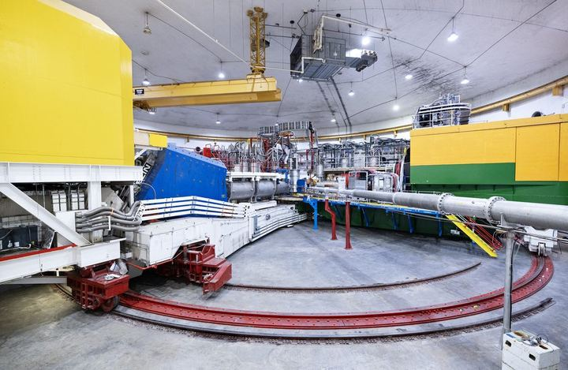
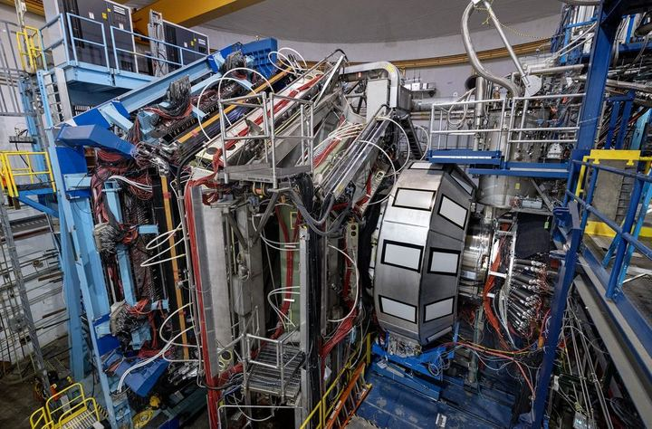
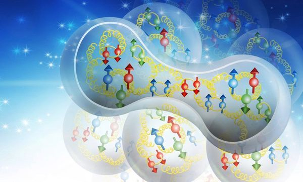

Press
-

Nuclear Physicists Discover New Rule for Peppy Partner Picking [June 2026]
On our paper Nature 654, 619 (2026):
-

The Force Is Strong in Neutron Stars [February 2020]
On our paper Nature 578, 540 (2020):
-

Correlated Nucleons May Solve 35-Year-Old Mystery [February 2019]
On our paper Nature 566, 354 (2019):